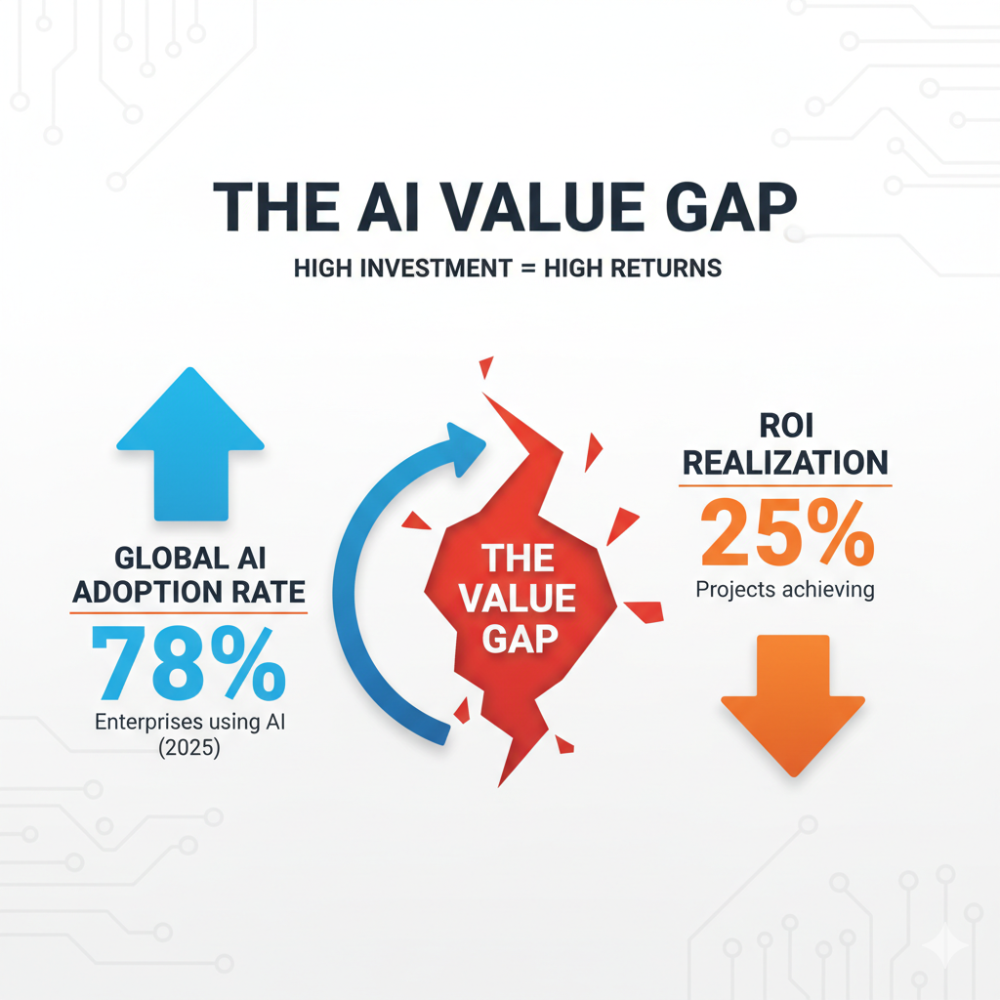
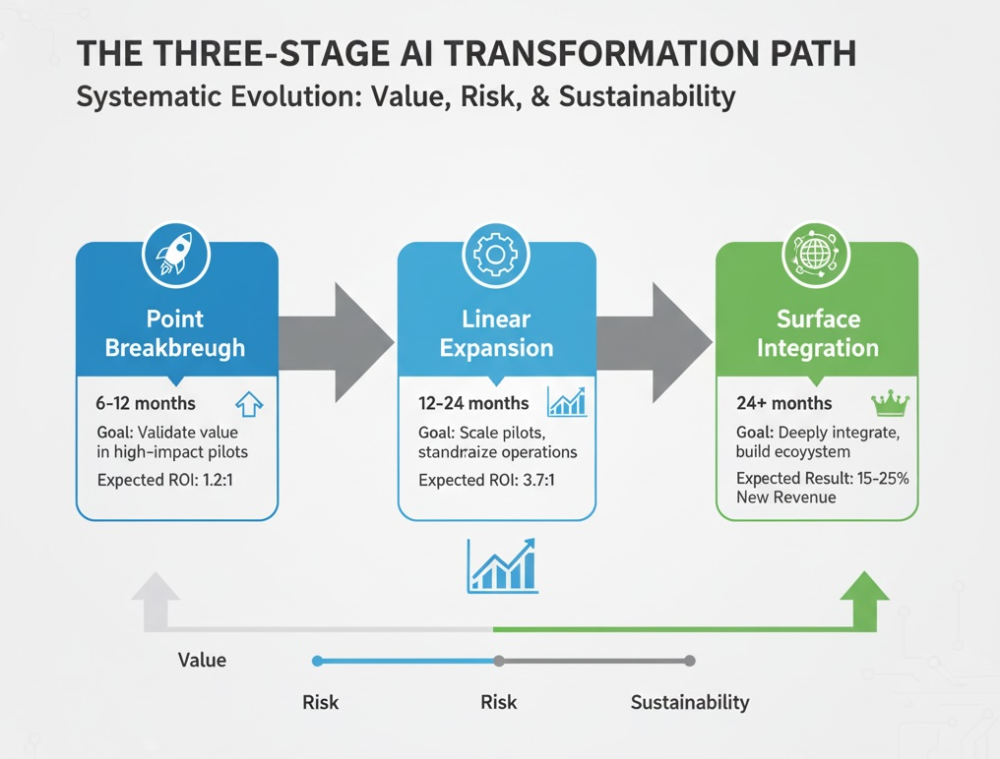
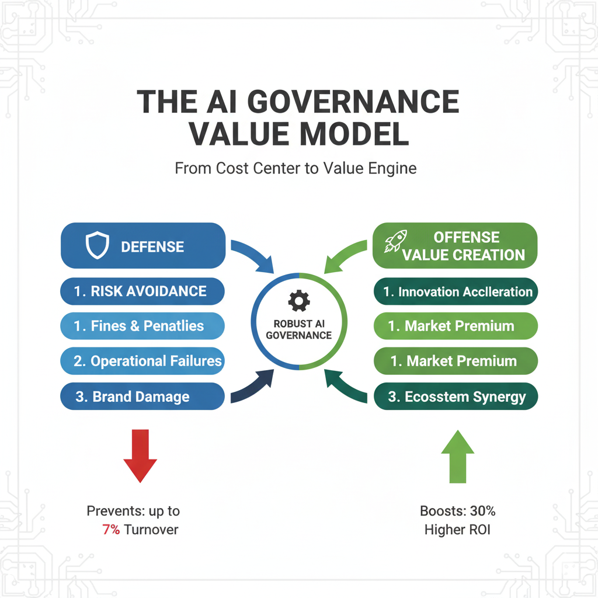

Executive Summary
In the current digital era, Artificial Intelligence (AI) is a core driver of corporate development. However, a significant paradox has emerged: while 78% of global enterprises have adopted AI in some capacity, a mere 25% of AI projects achieve their expected ROI.
This gap highlights that successful AI transformation is not a technical challenge but a strategic one, requiring systematic engineering and a focus on long-term value.
This report, based on research from over 500 global enterprises, diagnoses this value gap, identifies the seven core challenges hindering progress, and presents ZOKFORCE's proprietary frameworks to guide a successful transformation.
The ZOKFORCE Frameworks
- The Four-Quadrant AI Maturity Model to help enterprises identify their current state
- The Three-Stage Transformation Path to provide a clear, value-driven roadmap
- The Eight Core Indicators that enterprises must prioritize for successful AI agent deployment
The Core Problem: A Global AI Value Gap
The global AI landscape is defined by a deep contradiction: soaring adoption rates paired with disappointing value realization. This "adoption rate paradox" is the central challenge facing enterprises today.
High Adoption, Low Return
The AI Paradox in Numbers
78% global enterprise AI adoption in 2025 (up from 72% in 2024)
92% of companies plan to increase their AI investment in the next three years
But only 25% of AI projects meet their expected ROI

Regional Deployment Differences
When looking at active deployment, the global picture is highly varied. Emerging markets are often outpacing mature ones in their willingness to integrate AI deeply.
The Root Cause: Top 7 AI Transformation Challenges
Our research shows that the value gap is caused by a consistent set of challenges that hinder progress from pilot stages to full-scale integration.
Skills Gap (87%)
The most significant barrier is the lack of talent, not just in technical roles but also among business personnel who need to manage AI applications.
Data Quality Issues (64%)
Poor data quality remains a primary obstacle, as 77% of enterprises admit their data quality is average or worse, directly impacting model accuracy.
Cost Control Difficulty (52%)
AI projects frequently exceed budgets due to hidden costs in computing power, talent, and ongoing maintenance.
Technical Integration Complexity (48%)
Integrating new AI systems with legacy enterprise architecture is a major technical hurdle.
Governance Framework Gaps (41%)
A lack of clear governance leads to compliance risks and slows down innovation.
Change Management Resistance (38%)
Organizational resistance to new workflows and processes can stall AI initiatives.
ROI Measurement Difficulty (35%)
Many companies struggle to establish clear metrics to quantify the business value and ROI of their AI projects.
The ZOKFORCE Solution: A Three-Step Framework for Value Creation
Overcoming these challenges requires a systematic approach. ZOKFORCE has developed a comprehensive framework to guide enterprises from their initial exploratory steps to industry leadership.
Step 1: Assess Your Maturity - The Four-Quadrant Model
Enterprises fall into one of four categories based on their AI capability maturity and the business value they've realized. Understanding your position is the first step toward a targeted strategy.
Step 2: Define Your Priorities - The Eight Core Indicators
Based on our survey of 500+ enterprises, we identified the eight most critical factors when selecting and deploying AI Agents. These should guide your development and procurement decisions.
Response Accuracy
The top priority. The goal has shifted from "can it answer?" to "can it answer correctly?"
Processing Speed
Milliseconds matter. Every 100ms reduction increases user conversion rates by 1.2%
Data Security
Foundation of commercial trust and can command 15-25% pricing premium in B2B
AI Ethics Compliance
No longer just risk management - strong governance linked to 30% higher ROI
Governance Transparency
Essential for solving the "black box" problem in regulated industries
Multi-modal Coordination
AI that fuses text, voice, and images provides 40% higher user satisfaction
System Integration
Ensures AI connects seamlessly with existing enterprise systems
Task Completeness
Measures AI's ability to see complex, multi-step tasks through to completion
Step 3: Follow the Path - The Three-Stage Transformation Journey
ZOKFORCE has designed a proven, three-stage path for systematic evolution, balancing value, risk, and sustainability.

Stage 1: Point Breakthrough (6-12 months)
Goal: Rapidly validate AI's business value in a high-impact, low-risk scenario
Strategy: Use agile methods for quick validation (30-90 days) and build a minimal viable governance framework.
Expected ROI: 1.2:1, confirming technical feasibility and building organizational confidence.
Stage 2: Linear Expansion (12-24 months)
Goal: Scale successful pilots across the organization by standardizing operations
Strategy: Abstract pilot experiences into reusable templates and build a unified AI development platform.
Expected ROI: 3.7:1, achieving 40-60% cost reduction as AI covers 60-80% of core business.
Stage 3: Surface Integration (24+ months)
Goal: Deeply integrate AI into core systems and build an open ecosystem
Strategy: Become an AI capability provider, create new business models, and establish industry leadership.
Expected Results: New business revenue accounts for 15-25% of total income.
Key Enablers of Modern AI Transformation
Two key trends are shaping the future of enterprise AI: the rise of Intelligent Agents and the strategic importance of AI Governance.
The Ascent of Intelligent Agent AI
The paradigm is shifting from passive AI tools to autonomous Intelligent Agents that can make decisions and execute multi-step tasks. Gartner predicts that by 2028, 33% of enterprise software will include agentic AI, up from less than 1% in 2024.
| Application Area | AI Agent Impact | Measurable Results |
|---|---|---|
| Supply Chain | Predictive disruption management | 35% inventory improvement, 60% stockout reduction |
| Cybersecurity | Autonomous threat detection and response | 80% detection improvement, 90% faster response |
| Customer Service | Intelligent conversation handling | 80% automation rate by 2029 (predicted) |
AI Governance: From Cost Center to Value Engine
Traditionally viewed as a compliance cost, robust AI governance is now a proven value driver. Enterprises with comprehensive governance frameworks achieve 30% higher ROI from their AI investments.

- Risk Avoidance: Prevents fines (up to 7% of global turnover), operational failures, and brand damage
- Innovation Acceleration: Clear rules reduce uncertainty, allowing teams to innovate faster with 40% shorter project cycles
- Market Premium: Certified governance is a competitive advantage, commanding 15-25% higher pricing in B2B markets
- Ecosystem Synergy: Strong governance builds the trust necessary for effective external partnerships and ecosystem growth
Building the AI-Driven Future
Successful AI transformation is not about adopting the latest technology; it's about a strategic re-engineering of the enterprise to systematically create value. The key lies in finding a dynamic balance between technological innovation, governance responsibility, short-term wins, and long-term value.
The goal is a future where your enterprise does not just use AI but becomes an intelligent, adaptive organization—capable of not only surviving but thriving in the coming era.
The Strategic Imperative
Organizations that master systematic AI value creation today will define tomorrow's competitive landscape. The convergence of mature technology, proven methodologies, and clear ROI frameworks creates an unprecedented opportunity for strategic advantage.
Ready to Bridge Your AI Value Gap?
ZOKFORCE's proven frameworks help enterprises transform from AI experimentation to systematic value creation. Our three-step methodology, AI Maturity Assessment, can help enterprise delivers measurable ROI at every stage.
Free maturity assessment Strategic roadmap ROI projection modeling